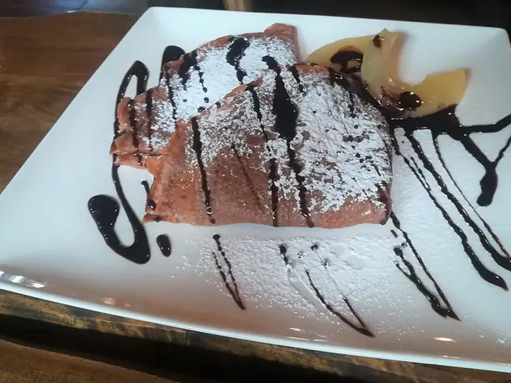

Блинчики с творогом
Тонкие блинчики со сладкой творожной начинкой и изюмом, подают со сметаной
60 мин5 порц.547 ккал на порциюБ 28 · Ж 25 · У 53Русская кухня
Открыть в приложении: порции, таймеры, список покупок
Продукты на 5 порц.
- Молоко2,5 стак.
- Яйцо куриное3 шт
- Мука пшеничная1,25 стак.
- Сахар80 г
- Соль1 щеп.
- Растительное масло3 ст. л.
- Творог 5%500 г
- Ванильный сахар1 пакетик
- Изюм по желанию50 г
- Сливочное масло30 г
- Сметана 20% по желанию100 г
Как готовить
- Взбейте 2 яйца с 20 г сахара и солью, влейте половину молока, всыпьте муку и размешайте без комков. Влейте остальное молоко и 2 ст. л. масла, оставьте на 15 минут.
- Напеките тонкие блины на смазанной сковороде на среднем огне, по 1 минуте с первой стороны и 30 секунд со второй.
- Изюм залейте кипятком на 10 минут и обсушите.
- Творог разомните вилкой с оставшимся яйцом, 60 г сахара и ванильным сахаром до однородности. Вмешайте изюм.
- На каждый блин положите 1,5 ст. л. начинки и сверните конвертиком или трубочкой.
- Обжарьте на сливочном масле на слабо-среднем огне по 2 минуты с каждой стороны, пока блинчики не зарумянятся, а начинка не прогреется. Подавайте со сметаной.
Совет. Если творог влажный, отожмите его через марлю, иначе начинка вытечет при жарке.